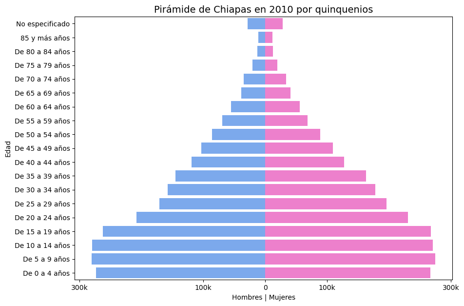
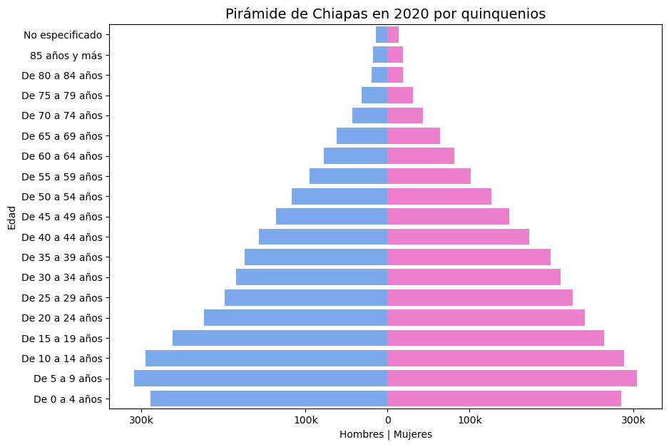
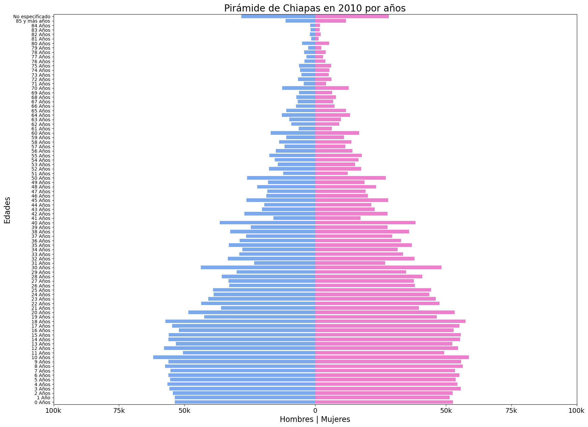
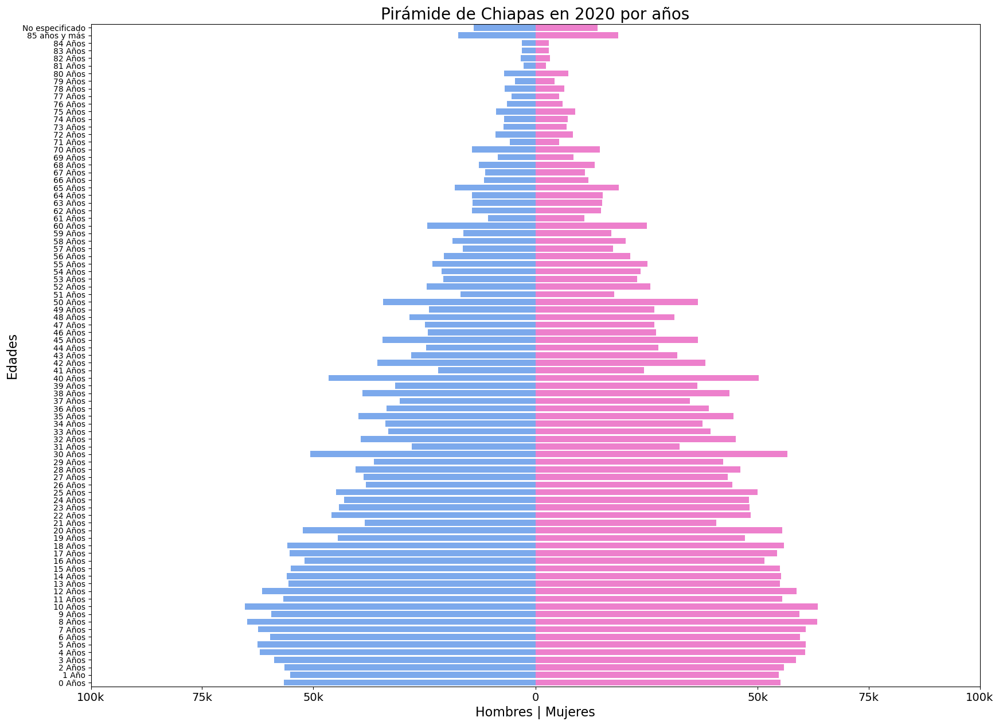
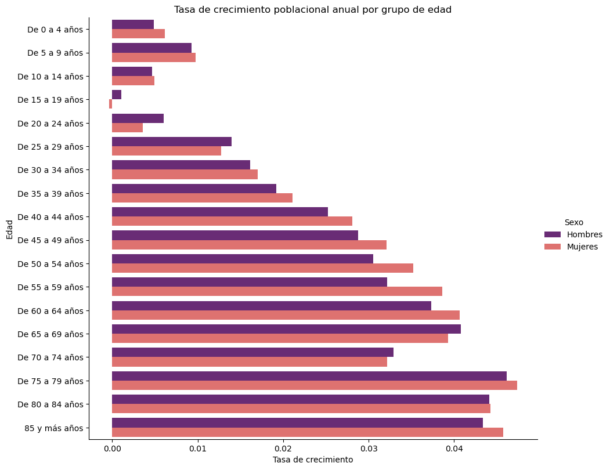
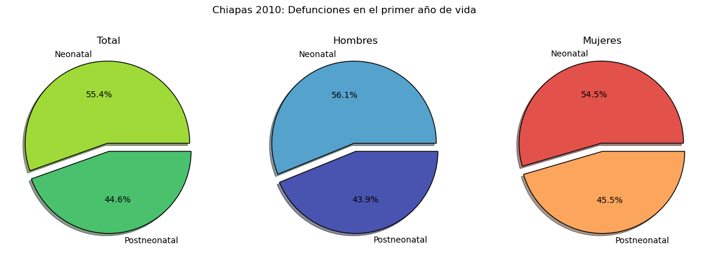
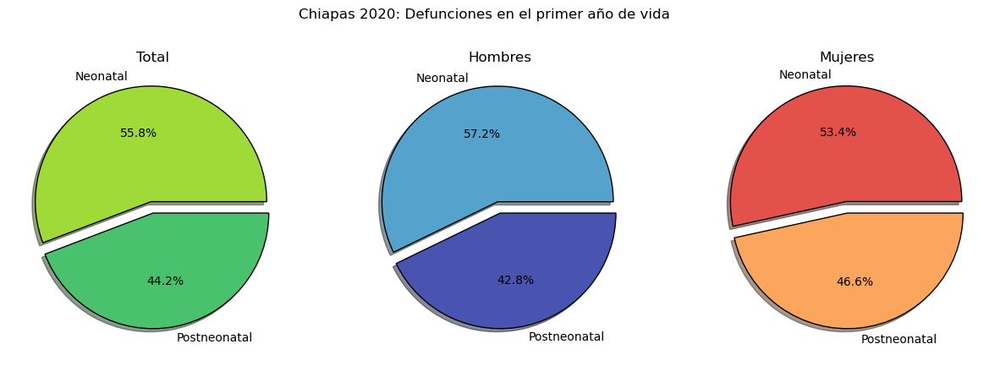
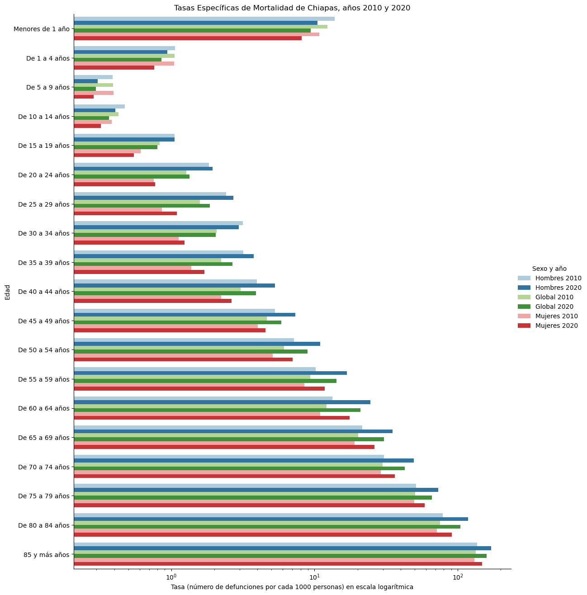
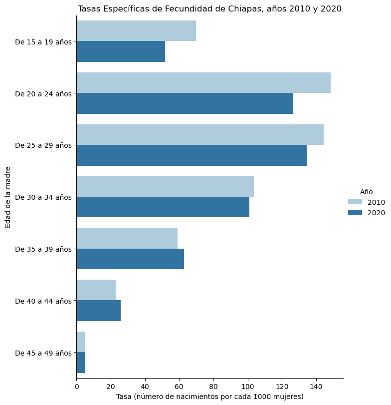

import pandas as pd
import numpy as np
import matplotlib.pyplot as plt
import seaborn as sns
from datetime import date
import itertools as itAnálisis demográfico del estado de Chiapas
1 Introducción
El estado de Chiapas, situado en la región sureste de México, se erige como un territorio de profunda relevancia tanto geográfica como cultural. Limitando al norte con Tabasco, al oeste con Veracruz y Oaxaca, al sur con el Océano Pacífico y al este con la República de Guatemala, este estado comparte una extensa frontera de 658 kilómetros, consolidándose como un puente entre Norte y Centroamérica. A día de hoy, Chiapas está dividido en 124 municipios.
En el censo de 2020, la población de Chiapas ascendió a 5,543,828 habitantes (48.8% hombres y 51.2% mujeres), con una densidad poblacional de 76 personas por kilómetro cuadrado. Esta cifra representa un crecimiento del 15.6% en comparación con 2010. Además, en 2020, el 49% de la población reside en áreas urbanas, mientras que el 51% habita en zonas rurales.
Chiapas se distingue por ser uno de los estados más diversos étnicamente en México, albergando 12 de los 62 grupos indígenas oficialmente reconocidos. Entre las comunidades más destacadas se encuentran los tzotziles, tzetzales, choles, zoques y tojolabales. A pesar de esta riqueza cultural, el idioma español prevalece como la lengua predominante (61.2%), aunque una parte significativa de la población se comunica en sus lenguas maternas (36.5%), siendo las más prominentes el Tzotzil (36%), Tzetzal (34.4%) y Chol (17.4%). Cabe mencionar que algunas lenguas indígenas, como las mayas mochó (o motozintleco), cakchiquel, quiché, jacalteco, lacandón y tojolabal, se encuentran en peligro de extinción.
A nivel nacional, Chiapas se caracteriza por tener 20,951 localidades rurales y 206 urbanas, ocupando el octavo lugar en términos de población a nivel nacional. No obstante, Chiapas enfrenta desafíos considerables en términos de desarrollo humano, ya que su Índice de Desarrollo Humano, según el Programa de las Naciones Unidas para el Desarrollo (PNUD), es de 0.647, muy por debajo de la media nacional en México, que es de 0.779.
En 2021, la economía de Chiapas registró un Producto Interno Bruto (PIB) nominal de 379,227 millones de pesos. Las actividades primarias contribuyeron con el 7.7% del producto total del estado, las secundarias con el 18.7%, y las terciarias con el 73.6%. Según la Encuesta Nacional de Ocupación y Empleo, la población económicamente activa (PEA) para el segundo trimestre de 2023 fue del 56.1%, mientras que la población no económicamente activa (PNEA) se mantuvo en un 1.8%.
Chiapas se considera un Estado Democrático de Derecho con una composición pluricultural que reconoce los sistemas normativos internos de sus pueblos y comunidades indígenas. Forma parte de los Estados Unidos Mexicanos y su gobierno se compromete con la protección de su biodiversidad. Desde el 8 de diciembre de 2018, el Gobernador Constitucional del Estado de Chiapas es Rutilio Escandón Cadenas, y hasta la fecha, todos los gobernadores del estado han sido hombres.
En cuanto al clima de la región, se caracteriza por ser cálido y húmedo, con una temperatura media anual de 25.4°C. El período más caluroso abarca de abril a mayo, mientras que las lluvias son constantes a lo largo del año, alcanzando su máxima intensidad en septiembre y octubre debido a la influencia de los huracanes.
En este contexto, la presente investigación se enfocará en el análisis del comportamiento demográfico en el estado de Chiapas, México, haciendo uso de los datos recopilados por el Instituto Nacional de Estadística y Geografía (INEGI) en los censos de 2010 y 2020. El énfasis recae en la evaluación de la declaración de la edad por parte de la población chiapaneca, mediante la aplicación de índices demográficos, con especial atención en los índices de Whipple, Myres y Naciones Unidas.
El propósito fundamental de este estudio es comprender la evolución de la estructura de edad de la población en Chiapas durante la última década y determinar si existen diferencias significativas entre los datos obtenidos en ambos censos. Se busca, en particular, verificar si hay indicios que respalden una mejora en la precisión de la declaración de la edad de las personas, permitiendo una evaluación de la calidad de la información demográfica y, por consiguiente, una valoración de la consistencia y confiabilidad de dichos datos.
A lo largo de este proyecto, se explorarán las tendencias y desafíos demográficos en Chiapas, con el fin de proporcionar una visión más precisa de la dinámica poblacional en esta región.
En el ámbito demográfico, el estado enfrenta diversas realidades. Las principales causas de mortalidad en la región incluyen tumores malignos, accidentes, diabetes mellitus, enfermedades del corazón y afecciones perinatales. Además, un 1.39% de la población presenta algún tipo de discapacidad, distribuyéndose de la siguiente manera: un 42.87% tiene discapacidad motriz, un 13.30% auditiva, un 4.77% de lenguaje, un 29.94% visual y un 15.81% mental. En el año 2000, la tasa de mortalidad general municipal se situó en 3.81 defunciones por cada 1000 habitantes, mientras que la tasa de mortalidad infantil municipal fue de 24.05 niños por cada 1000 habitantes.
En cuanto a la estructura de edad de la población, es importante destacar que cerca de la mitad de la población tiene menos de 20 años de edad. Asimismo, Chiapas alberga una población significativa de indígenas, representando aproximadamente el 30% del total.
El desarrollo económico de Chiapas se sustenta principalmente en la minería y la agricultura. Los cultivos de café, plátano y coco prosperan en la fértil llanura de Soconusco, mientras que el maíz se cultiva en casi todo el territorio. La hidroelectricidad desempeña un papel relevante en los ingresos estatales, aprovechando el potencial del río Grijalva, que atraviesa el centro del estado. Además, la industria turística ha cobrado impulso en la región, ya que Chiapas alberga algunos de los sitios arqueológicos más impresionantes de la civilización maya, convirtiéndolo en un destino prioritario para los amantes de esta cultura. Los lugares que actualmente atraen a turistas en Chiapas incluyen Tuxtla Gutiérrez, Chiapa de Corzo, San Cristóbal de Las Casas, Comitán, Palenque, Tapachula y Tonalá.
En 2020, aproximadamente el 46.1% de la población chiapaneca se encontraba en situación de pobreza moderada, mientras que el 28.3% experimentaba pobreza extrema. Además, un 16.9% de la población era vulnerable en términos de carencias sociales, y un 2.66% era vulnerable por ingresos. Las principales carencias sociales identificadas en Chiapas en 2020 estaban relacionadas con el acceso limitado a la seguridad social, los servicios básicos en la vivienda y los servicios de salud.
En el ámbito educativo, en 2020, un 36.3% de la población de 15 años y más había completado la primaria, mientras que un 26.8% había terminado la secundaria, un 20.0% había alcanzado el nivel de bachillerato y un 12.5% tenía educación universitaria. Sin embargo, se registró una tasa de analfabetismo del 13.6%. De la población analfabeta, un 37.1% eran hombres y un 62.9% mujeres.
En términos de atención médica, en 2020, las opciones más utilizadas incluyeron el Centro de Salud u Hospital de la SSA (Seguro Popular) (2.76 millones de personas), el IMSS (Seguro Social) (752 mil personas) y los consultorios de farmacia (698 mil personas). Además, los seguros sociales que agruparon al mayor número de personas fueron Pemex, Defensa o Marina (2.64 millones) y No Especificado (1.69 millones).
2 Evaluación de la calidad de la información
censo_year = ["2010", "2010_quinquenal", "2020", "2020_quinquenal"]
links = {"2010": "C:/Users/Erick/Documents/Actuaría/Semestre 7/Demografía/Proyecto/Datos Chiapas/Pob_2010.xls",
"2010_quinquenal": "C:/Users/Erick/Documents/Actuaría/Semestre 7/Demografía/Proyecto/Datos Chiapas/Pob_2010_quinquenal.xls",
"2020": "C:/Users/Erick/Documents/Actuaría/Semestre 7/Demografía/Proyecto/Datos Chiapas/Pob_2020.xls",
"2020_quinquenal": "C:/Users/Erick/Documents/Actuaría/Semestre 7/Demografía/Proyecto/Datos Chiapas/Pob_2020_quinquenal.xls"}
# Creamos un diccionario de donde guardaremos los DataFrames
poblacion = {censo: pd.read_excel(links[censo]) for censo in censo_year}2.1 Índice de Whipple
Este índice mide la declaración de la edad, respecto a la preferencia hacia ciertos dígitos (0 y 5); su rango de variación se extiende desde un mínimo de 100 hasta un máximo de 500, siendo el inferior indicativo de que no existe atracción por los dígitos esto implica que se tiene una buena declaración de la edad; caso contrario, cuando tomamos el valor máximo tenemos fuerte evidencia para decir que todas las edades han sido declaradas en dígitos terminados en 0 ó 5.
El índice de Whipple se define como:
\[IW = \frac{5(P_{25} + P_{30} + \cdots + P_{60})}{\sum_{k = 23}^{62}P_k} \cdot 100\] Donde \(P_x\), representa a la población de edad \(x\), con \(x\in \{23,...,62\}\).
# Por lo cual crearemos una función para que calcule el indice de Whipple para culquier dataframe limpio.
# para la informacion que se requiere pob2020.iloc[23:63,1].values
# para ir de 5 en 5 pob2020.iloc[25:63:5,:]
def IW(pob_year):
IW_H = (5*(sum(pob_year.iloc[20:63:5,1])))/sum(pob_year.iloc[23:63,1])*100
IW_M = (5*(sum(pob_year.iloc[20:63:5,2])))/sum(pob_year.iloc[23:63,2])*100
resultado = (
f'El índice de Whipple para los hombres es de {round(IW_H, 2)} y '
f'el índice de Whipple para las mujeres es de {round(IW_M, 2)}')
return resultado### Por lo cual veamos cual es el indice de Whipple para las poblaciones del 2010 y 2020
print('Para la población del 2010, tenemos que:' + '\n'+ IW(poblacion["2010"]) +'\n')
print('Para la población del 2020, tenemos que:'+ '\n' + IW(poblacion["2020"]))Para la población del 2010, tenemos que:
El índice de Whipple para los hombres es de 149.36 y el índice de Whipple para las mujeres es de 147.49
Para la población del 2020, tenemos que:
El índice de Whipple para los hombres es de 146.09 y el índice de Whipple para las mujeres es de 142.77Observaciones
Todos los Indices caen en el intervalo \([125,175]\) lo cual nos indica que la población tiene mucha tendecia a declarar su edad en edades que terminan en digitos 5 ó 10, por lo cual esta información puede clasificarse como datos malos; sin embargo, también hay que tener en cuenta las siguientes observaciones e índices para ver si deben ser rechazados o no.
Notemos que para ambos años tenemos un índice muy parecido para ambos sexos.
Ambos indices son mayores a 100 por .30 y .40 puntos porcentuales
Se puede observar que hay una disminución de .13 puntos porcentuales para ambos sexos,entre los indicadores del 2010 y 2020, esto podría indicar que posiblemente la población declare mejor su edad con respecto al decenio anterior.
2.2 Índice de Myers
Este Índice es un indicador resumen que evalúa el nivel de preferencia de dígitos por parte de la población. Permite la evaluación de la preferencia o rechazo que tiene la población por cada dígito (de 0 a 9) en la declaración de la edad Recordamos que el índice de Myers se calcula como
\[IM = \sum_{j = 0}^{9}|M_j|\]
donde
\[M_j = \left[\frac{a_jP_j + a_j'P_j'}{\sum_{k = 0}^{9}[a_kP_k + a_k'P_k']} - \frac{1}{10}\right]\cdot100\]
\[a_j = j + 1 \qquad a_j' = 9 - j,\]
\[Pj = P_{1j} + \cdots + P_{6j} \qquad Pj' = P_{2j} + \cdots + P_{7j}\]
para cada \(j \in \{0,1,...,9\}\).
\(P_j\) es la población con edad terminada en el digito \(j\).
Necesitamos las edades de 10 años hasta 79 años, así que primero vamos a crear una función para calcular las \(M_j\)
## Esta función recibe un dataframe limpio y regresa
## En su primer posición [0] el valor númerico del Indice de Myers para hombres
## En la segunda posición [1] el valor númerico del Indice para las mujeres y en la ultima [2] un resumen de estos.
def IM(pob_year):
aux = ["Hombres", "Mujeres"]
aux_1 = ''
for i in range(2):
ajPj_i = []
Mj_i = []
IM_i = 0
for j in range(10):
aj = j + 1
aj_prima = 9 - j
Pj = sum(pob_year[aux[i]][10 + j:61 + j:10].values)
Pj_prima = sum(pob_year[aux[i]][20 + j:71 + j:10].values)
ajPj_i.append(aj*Pj + aj_prima*Pj_prima)
for ajPj in ajPj_i:
Mj = (ajPj/sum(ajPj_i) - 1/10)*100
Mj_i.append(Mj)
for Mj in Mj_i:
IM_i += abs(Mj)
aux_1 += (f'El índice de Myers para los {aux[i]} es de {round(IM_i, 2)}')+" y "
return aux_1print("Por lo cual notemos que para la poblacion del 2010. " + IM(poblacion["2010"]) + "\n")
print("Por lo cual notemos que para la poblacion del 2020. " + IM(poblacion["2020"]))Por lo cual notemos que para la poblacion del 2010. El índice de Myers para los Hombres es de 10.73 y El índice de Myers para los Mujeres es de 9.87 y
Por lo cual notemos que para la poblacion del 2020. El índice de Myers para los Hombres es de 10.79 y El índice de Myers para los Mujeres es de 10.01 y Observaciones
Notemos que el indice se encuentra en el intervalo \([5,15]\), lo cual nos indica que hay una mayor concentracion de los datos en algún digito, lo cual complementado con el Indice de Whipple nos da fuerte evidencia de que la población tiene preferencia en declarar su edad en digitos que terminen en 0 ó 5
Notemos que claramente al igual que en el Indice de Whipple podemos ver una mejora en la declaración de la edad de las personas, teniendo una mejora de 2.2 y 1.9 puntos porcentuales en hombres y mujeres respectivamente.
2.3 Índice de Naciones Unidas
Este índice, al igual que los anteriores, nos permite medir irregularidades en la declaración de la edad de las personas; sin embargo, este índice, a diferencia de los otros, considera la poblacion por quiquenios, lo cual permite minimizar el error, ademas nos da un solo indice general y no dos como los anteriores (es el mismo para hombres y para mujeres.
La fórmula para calcular el índice de las naciones unidas está dada por:
\[INU = \frac{1}{15}\left[\sum_{k = 5}^{75}\ _5CEH_k + \sum_{k = 5}^{75} \ _5CEM_k + 3\sum_{k = 5}^{75} \Delta_5IM_k\right]\]
donde
\[_5CEH_k = \left|\frac{2\ _5P_k^H}{_5P_{k-1}^H +\ _5P_{k+1}^H} - 1\right| \cdot 100 \qquad _5CEM_k = \left|\frac{2\ _5P_k^M}{_5P_{k-1}^M +\ _5P_{k+1}^M} - 1\right| \cdot 100\]
\[\Delta_5IM_k = |\ _5IM_k -\ _5IM_{k-1}|\]
\[_5IM_k =\frac{\ _5P_k^H}{\ _5P_k^M} \cdot 100\]
$ p_k^{M|H}$ es la poblacion de hombres y mujeres por quinquenio \(k\)
def INU(df):
CEH = []
CEM = []
DeltaIM = []
for i in range(1,16):
actual5PxH = df["Hombres"].values[i]
pasado5PxH = df["Hombres"].values[i - 1]
futuro5PxH = df["Hombres"].values[i + 1]
actual5PxM = df["Mujeres"].values[i]
pasado5PxM = df["Mujeres"].values[i - 1]
futuro5PxM = df["Mujeres"].values[i + 1]
actualIM = (actual5PxH/actual5PxM)*100
pasadoIM = (pasado5PxH/pasado5PxM)*100
CEH.append(abs(2*actual5PxH/(pasado5PxH + futuro5PxH) - 1)*100)
CEM.append(abs(2*actual5PxM/(pasado5PxM + futuro5PxM) - 1)*100)
DeltaIM.append(abs(actualIM - pasadoIM))
indice = float((sum(CEH) + sum(CEM) + 3*sum(DeltaIM))/15)
return round(indice, 2)print("El índice de naciones unidas para la población de 2010 es:", INU(poblacion["2010_quinquenal"]), "\n")
print("El índice de naciones unidas para la población de 2020 es:", INU(poblacion["2020_quinquenal"]))El índice de naciones unidas para la población de 2010 es: 20.01
El índice de naciones unidas para la población de 2020 es: 11.15Observaciones
- Notemos que ambos índices caen en el intervalo \([0,20]\), lo cual nos indica que la información obtenida es satisfactoria.
- Esto nos indica que la gente no declara su edad tan mal, dado que estos valores no estan tan alejados del 0, sin embargo no hay que olvidar que por los indices pasados se mostraba una tendencia a declarar su edad en multiplos de 5 y hay una ligera concentracion de los datos en las edad 10.
2.4 Pirámides poblacionales
# Para poder graficar la piramide debemos hacer una modificación en los datos
# Por lo cual haremos alguna de las columnas poblacionales negativa.
pob_2010_quinquenal = poblacion["2010_quinquenal"].copy()
pob_2020_quinquenal = poblacion["2020_quinquenal"].copy()
pob_2010_quinquenal["Hombres"] = -pob_2010_quinquenal["Hombres"]
pob_2020_quinquenal["Hombres"] = -pob_2020_quinquenal["Hombres"]
pob_2010_quinquenal.head()| Edad | Hombres | Mujeres | |
|---|---|---|---|
| 0 | De 0 a 4 años | -273660 | 266799 |
| 1 | De 5 a 9 años | -280057 | 274635 |
| 2 | De 10 a 14 años | -279274 | 270622 |
| 3 | De 15 a 19 años | -262407 | 267826 |
| 4 | De 20 a 24 años | -207582 | 230437 |
# Ahora vamos a invertir la grafica para tener el mismo formato.
pob_2010_quinquenal = pob_2010_quinquenal.iloc[::-1]
pob_2020_quinquenal = pob_2020_quinquenal.iloc[::-1]sns.barplot(data=pob_2010_quinquenal, x='Hombres',y='Edad', color = "#69A6FF")
sns.barplot(data=pob_2010_quinquenal, x='Mujeres',y='Edad', color = "#FF6ED3")
plt.title("Pirámide de Chiapas en 2010 por quinquenios", fontsize=14)
plt.xlabel("Hombres | Mujeres")
plt.xticks(ticks = [-300000,-100000,0,100000,300000],
labels = ["300k","100k","0","100k","300k"])
plt.gcf().set_size_inches(10, 7)
sns.barplot(data=pob_2020_quinquenal, x='Hombres',y='Edad', color = "#69A6FF")
sns.barplot(data=pob_2020_quinquenal, x='Mujeres',y='Edad', color = "#FF6ED3")
plt.title("Pirámide de Chiapas en 2020 por quinquenios", fontsize=14)
plt.xlabel("Hombres | Mujeres")
plt.xticks(ticks = [-300000,-100000,0,100000,300000],
labels = ["300k","100k","0","100k","300k"])
plt.gcf().set_size_inches(10, 7)
# Analogamente pero para los grupos por edades individuales, tenemos lo sig.
pob_2010 = poblacion["2010"].copy()
pob_2010 = pob_2010.iloc[::-1]
pob_2010["Hombres"] = -pob_2010["Hombres"]
sns.barplot(data=pob_2010, x='Hombres',y='Edad', color = "#69A6FF")
sns.barplot(data=pob_2010, x='Mujeres',y='Edad', color = "#FF6ED3")
plt.title("Pirámide de Chiapas en 2010 por años",fontsize=20)
plt.xlabel("Hombres | Mujeres", fontsize=16)
plt.ylabel("Edades", fontsize = 16)
plt.xticks(ticks = [-100000, -75000,-50000,0,50000,75000,100000],
labels = ["100k","75k","50k","0","50k","75k","100k"],
fontsize = 14)
plt.yticks()
plt.gcf().set_size_inches(20, 15)
# Analogamente pero para los grupos por edades individuales, tenemos lo sig.
pob_2020 = poblacion["2020"].copy()
pob_2020 = pob_2020.iloc[::-1]
pob_2020["Hombres"] = -pob_2020["Hombres"]
sns.barplot(data=pob_2020, x='Hombres',y='Edad', color = "#69A6FF")
sns.barplot(data=pob_2020, x='Mujeres',y='Edad', color = "#FF6ED3")
plt.title("Pirámide de Chiapas en 2020 por años",fontsize=20)
plt.xlabel("Hombres | Mujeres", fontsize=16)
plt.ylabel("Edades", fontsize = 16)
plt.xticks(ticks = [-100000, -75000,-50000,0,50000,75000,100000],
labels = ["100k","75k","50k","0","50k","75k","100k"],
fontsize = 14)
plt.yticks()
plt.gcf().set_size_inches(20, 15)
Observaciones
Al analizar las pirámides se hacen evidente varias cosas; la población nos indica que ha habido cambios en los últimos 10 años, en el 2010 había 101 hombres por cada 100 mujeres, mientras que para el 2020 las mujeres representan ahora el 51.1% del total de la población chiapaneca. La edad mediana pasó de ser de 21 años a 24 y ha disminuido el porcentaje de población de 0 años hasta 29 por el contrario ha aumentado el porcentaje de de 30 y más. Chiapas a lo largo de 10 años tuvo una diferencia en su tasa de crecimiento de 0.5.
Necesidades básicas
Para el 2020 el acceso a la educación tuvo un incremento comparado con el 2010, los niños de 3 a 5 años que asistían a la escuela eran del 62.4% un 11% mas que 10 años antes, sin embargo para niños de 6 a 16 años hubo una disminución de un 0.14%. La tasa de analfabetismo si tuvo un decremento significativo: pasó de ser 17.8 a 13.7.
3 Corrección de la información
Empleando métodos de corrección y refinamiento de datos, se pretende obtener una comprensión más precisa de la distribución de la población en términos de género y grupos de edad.
En primera instancia, se aplicará el método de prorrateo por sexo para asignar con mayor precisión a la población no especificada en ambos censos a los grupos de género correspondientes. Esta metodología permitirá obtener una visión detallada y precisa de la distribución de la población según el sexo.
Adicionalmente, se utilizará el método de corrección 1/16 para suavizar la información de la población por sexo en ambos censos. Este proceso contribuirá a eliminar fluctuaciones no deseadas y a obtener datos coherentes que reflejen de manera más precisa las tendencias demográficas reales.
Una vez corregidos y refinados los datos de los censos de 2010 y 2020, el análisis se centrará en la estimación de las tasas de crecimiento poblacional por grupos quinquenales de edad y género. Para este propósito, se empleará un modelo de crecimiento exponencial, lo que permitirá identificar los grupos de edad que están experimentando un crecimiento acelerado, así como aquellos que podrían estar experimentando una disminución en su población.
Con el objetivo de visualizar y comprender de manera efectiva estas tendencias demográficas, se generarán dos gráficos separados, uno para el género masculino y otro para el género femenino. A través de estos gráficos, se buscará responder preguntas fundamentales, como la identificación de los grupos de edad que experimentan un crecimiento más rápido y aquellos que muestran un ritmo de crecimiento más lento o, incluso, una disminución en su población.
Finalmente, se calculará la población a mitad de año para los años 2010 y 2020, desglosada por género y grupos quinquenales de edad. Este análisis demográfico proporcionará una comprensión profunda de la dinámica poblacional en Chiapas, ofreciendo información valiosa para la toma de decisiones y la planificación a largo plazo en diversos campos, incluyendo la atención médica, la educación y otros aspectos relevantes para el desarrollo de la entidad.
3.1 Método de corrección: Prorrateo
El método del prorrateo es un método utilizado para la corrección de nuestra información, principalmente se usa para corregir a la población que no declaró su edad (Población no especificada), suponiendo que ésta se distribuye igual que el resto de la población si estos hubieran declarado su edad. Para esto vamos a distribuir a la población no especificada en el resto de la población multiplicando a nuestra población que si declaro su edad por nuestro Factor de Prorrateo (FP) definido como:
\[FP=1+\frac{P_{NE}}{P_T−P_{NE}} \]
donde
\(P_{NE}\) : Población no especificada
\(P_T\) : Población total
# Función para realizar la corrección mediante el método de prorrateo:
def prorrateo(df):
df_pr = pd.DataFrame() # Creamos un DataFrame vacío donde guardaremos la población prorrateada
df_pr['Edad'] = df['Edad'].iloc[:-1]
for sexo in ['Hombres', 'Mujeres']:
pne = df[sexo].iloc[-1] # Población no especificada
pt = df[sexo].sum() # Población total
fp = 1 + pne / (pt - pne) # Factor de prorrateo
df_pr[sexo] = df[sexo].iloc[:-1] * fp # Realizamos la correción
df_pr[sexo] = df_pr[sexo].astype(float).round() # Redondeamos los resultados
return df_pr# Realizamos la corrección:
for censo in censo_year:
poblacion[censo] = prorrateo(poblacion[censo])Datos prorrateados
poblacion["2010"]| Edad | Hombres | Mujeres | |
|---|---|---|---|
| 0 | 0 Años | 54242.0 | 53301.0 |
| 1 | 1 Año | 54299.0 | 52028.0 |
| 2 | 2 Años | 55001.0 | 53176.0 |
| 3 | 3 Años | 56324.0 | 56370.0 |
| 4 | 4 Años | 57108.0 | 55043.0 |
| ... | ... | ... | ... |
| 81 | 81 Años | 1557.0 | 1327.0 |
| 82 | 82 Años | 2056.0 | 2100.0 |
| 83 | 83 Años | 1829.0 | 1822.0 |
| 84 | 84 Años | 1911.0 | 1921.0 |
| 85 | 85 y más años | 11415.0 | 11993.0 |
86 rows × 3 columns
poblacion["2020"]| Edad | Hombres | Mujeres | |
|---|---|---|---|
| 0 | 0 Años | 56852.0 | 55459.0 |
| 1 | 1 Año | 55408.0 | 55021.0 |
| 2 | 2 Años | 56772.0 | 56230.0 |
| 3 | 3 Años | 59044.0 | 58964.0 |
| 4 | 4 Años | 62327.0 | 60975.0 |
| ... | ... | ... | ... |
| 81 | 81 Años | 2689.0 | 2458.0 |
| 82 | 82 Años | 3356.0 | 3286.0 |
| 83 | 83 Años | 2989.0 | 3045.0 |
| 84 | 84 Años | 3040.0 | 3025.0 |
| 85 | 85 años y más | 17431.0 | 18747.0 |
86 rows × 3 columns
poblacion["2010_quinquenal"]| Edad | Hombres | Mujeres | |
|---|---|---|---|
| 0 | De 0 a 4 años | 276975.0 | 269918.0 |
| 1 | De 5 a 9 años | 283449.0 | 277846.0 |
| 2 | De 10 a 14 años | 282657.0 | 273786.0 |
| 3 | De 15 a 19 años | 265586.0 | 270957.0 |
| 4 | De 20 a 24 años | 210096.0 | 233131.0 |
| 5 | De 25 a 29 años | 172727.0 | 198167.0 |
| 6 | De 30 a 34 años | 159139.0 | 180219.0 |
| 7 | De 35 a 39 años | 147066.0 | 164579.0 |
| 8 | De 40 a 44 años | 120491.0 | 129062.0 |
| 9 | De 45 a 49 años | 104639.0 | 110818.0 |
| 10 | De 50 a 54 años | 86553.0 | 89929.0 |
| 11 | De 55 a 59 años | 69862.0 | 69334.0 |
| 12 | De 60 a 64 años | 55567.0 | 56247.0 |
| 13 | De 65 a 69 años | 38766.0 | 41095.0 |
| 14 | De 70 a 74 años | 34888.0 | 34428.0 |
| 15 | De 75 a 79 años | 20483.0 | 19740.0 |
| 16 | De 80 a 84 años | 12448.0 | 12524.0 |
| 17 | 85 y más años | 11415.0 | 11993.0 |
poblacion["2020_quinquenal"]| Edad | Hombres | Mujeres | |
|---|---|---|---|
| 0 | De 0 a 4 años | 290403.0 | 286649.0 |
| 1 | De 5 a 9 años | 310352.0 | 305535.0 |
| 2 | De 10 a 14 años | 296638.0 | 289440.0 |
| 3 | De 15 a 19 años | 263877.0 | 265360.0 |
| 4 | De 20 a 24 años | 224887.0 | 241980.0 |
| 5 | De 25 a 29 años | 199480.0 | 227064.0 |
| 6 | De 30 a 34 años | 185715.0 | 212327.0 |
| 7 | De 35 a 39 años | 175170.0 | 199574.0 |
| 8 | De 40 a 44 años | 157280.0 | 173585.0 |
| 9 | De 45 a 49 años | 136510.0 | 149257.0 |
| 10 | De 50 a 54 años | 117762.0 | 127317.0 |
| 11 | De 55 a 59 años | 95395.0 | 101951.0 |
| 12 | De 60 a 64 años | 78069.0 | 81458.0 |
| 13 | De 65 a 69 años | 62355.0 | 64057.0 |
| 14 | De 70 a 74 años | 43342.0 | 42947.0 |
| 15 | De 75 a 79 años | 32136.0 | 31341.0 |
| 16 | De 80 a 84 años | 19145.0 | 19293.0 |
| 17 | 85 años y más | 17431.0 | 18747.0 |
3.2 Método de corrección: \(\boldsymbol{\frac{1}{16}}\)
El método de corrección que permite reajustar de manera adecuada a la población por grupos de edad una vez que se le aplicó prorrateo. Se define de la siguiente manera:
Para toda \(x \in \{10, 15,...,70\}\), \[\ _5\hat{P}_x = \frac{\ -{}_5P_{x-10} + 4\left({}_5P_{x-5}\right) + 10\left({}_5P_x\right) + 4\left(_5P_{x+5}\right) -{}_5P_{x+10}}{16}\]
def correccion116(df): # Definimos una función para realizar la correcion 1/16
for sexo in ["Hombres", "Mujeres"]:
px = {t: df[sexo].shift(int(t/5)) for t in [-10, -5, 0, 5, 10]}
df116 = (- px[-10] + 4*px[-5] + 10*px[0] + 4*px[5] - px[10])/16
df.loc[[*range(2,15)], sexo] = df116.iloc[2:-3].round()Realizamos la corrección a la población agrupada en quinquenios
for censo in ["2010_quinquenal", "2020_quinquenal"]:
correccion116(poblacion[censo])Datos suavizados con el método de correción de \(\boldsymbol{\frac{1}{16}}\):
poblacion["2010_quinquenal"]| Edad | Hombres | Mujeres | |
|---|---|---|---|
| 0 | De 0 a 4 años | 276975.0 | 269918.0 |
| 1 | De 5 a 9 años | 283449.0 | 277846.0 |
| 2 | De 10 a 14 años | 283477.0 | 276876.0 |
| 3 | De 15 a 19 años | 260668.0 | 266327.0 |
| 4 | De 20 a 24 años | 213276.0 | 234613.0 |
| 5 | De 25 a 29 años | 174472.0 | 199971.0 |
| 6 | De 30 a 34 años | 158748.0 | 180686.0 |
| 7 | De 35 a 39 años | 144488.0 | 160871.0 |
| 8 | De 40 a 44 años | 122877.0 | 132629.0 |
| 9 | De 45 a 49 años | 103602.0 | 109389.0 |
| 10 | De 50 a 54 años | 86717.0 | 89662.0 |
| 11 | De 55 a 59 años | 70231.0 | 70383.0 |
| 12 | De 60 a 64 años | 54296.0 | 54989.0 |
| 13 | De 65 a 69 años | 41196.0 | 42786.0 |
| 14 | De 70 a 74 años | 32366.0 | 32428.0 |
| 15 | De 75 a 79 años | 20483.0 | 19740.0 |
| 16 | De 80 a 84 años | 12448.0 | 12524.0 |
| 17 | 85 y más años | 11415.0 | 11993.0 |
poblacion["2020_quinquenal"]| Edad | Hombres | Mujeres | |
|---|---|---|---|
| 0 | De 0 a 4 años | 290403.0 | 286649.0 |
| 1 | De 5 a 9 años | 310352.0 | 305535.0 |
| 2 | De 10 a 14 años | 296750.0 | 290584.0 |
| 3 | De 15 a 19 años | 263440.0 | 265418.0 |
| 4 | De 20 a 24 años | 226247.0 | 242983.0 |
| 5 | De 25 a 29 años | 199885.0 | 226433.0 |
| 6 | De 30 a 34 años | 185849.0 | 213391.0 |
| 7 | De 35 a 39 años | 174231.0 | 197692.0 |
| 8 | De 40 a 44 años | 157253.0 | 174471.0 |
| 9 | De 45 a 49 años | 137169.0 | 149666.0 |
| 10 | De 50 a 54 años | 116868.0 | 126435.0 |
| 11 | De 55 a 59 años | 96151.0 | 102581.0 |
| 12 | De 60 a 64 años | 78162.0 | 81772.0 |
| 13 | De 65 a 69 años | 61354.0 | 62806.0 |
| 14 | De 70 a 74 años | 44636.0 | 44394.0 |
| 15 | De 75 a 79 años | 32136.0 | 31341.0 |
| 16 | De 80 a 84 años | 19145.0 | 19293.0 |
| 17 | 85 años y más | 17431.0 | 18747.0 |
3.3 Modelo de Crecimiento Exponencial y Tasas de Crecimiento Poblacional
Bajo el modelo de crecimiento exponencial, la población a tiempo \(t\), denotada como \(P(t)\), está dada por la ecuación
\[P(t) = P(0)e^{rt}\]
Donde \(P(0)\) y \(r\) es la tasa de crecimiento poblacional. Queremos calcular la tasa de crecimiento poblacional anual (\(r\)) para cada grupo de edad, asumiendo que la población sigue el modelo de crecimiento exponencial. Bajo este modelo, si conocemos las poblaciones a tiempos \(t_1\) y \(t_2\), las cuales denotaremos con \(P(t_1)\) y \(P(t_2)\) respectivamente, la tasa de crecimiento poblacional anual (\(r\)) se calcula como
\[r = \frac{\ln{\left(\frac{P(t_2)}{P(t_1)}\right)}}{t_2-t_1},\]
En nuestro caso, conocemos la población que había al 12 de junio de 2010 (\(t_1\)) y la que había al 15 de marzo de 2020 (\(t_2\)), que corresponden a los conteos publicados en los censos de 2010 y 2020 respectivamente.
def tasa_crecimiento(df1, df2, t1, t2): #t2 y t1 deben ser objetos de la libería date
r = pd.DataFrame() # DataFrame donde guardaremos las tasas por sexo y grupo de edad.
r["Edad"] = df1["Edad"]
anyos = (t2 - t1).days/365 # Los días entre t2 y t1 se calculan con la librería date
for sexo in ["Hombres", "Mujeres"]:
Pt2 = df2[sexo]
Pt1 = df1[sexo]
r[sexo] = np.log(Pt2/Pt1)/anyos
return rTasas de crecimiento poblacional por grupo de edad
tasas_crecimiento = {}
tasas_crecimiento["quinquenal"] = tasa_crecimiento(poblacion["2010_quinquenal"],
poblacion["2020_quinquenal"],
date(2010, 6, 12),
date(2020, 3, 15))
tasas_crecimiento["quinquenal"]| Edad | Hombres | Mujeres | |
|---|---|---|---|
| 0 | De 0 a 4 años | 0.004848 | 0.006159 |
| 1 | De 5 a 9 años | 0.009286 | 0.009729 |
| 2 | De 10 a 14 años | 0.004686 | 0.004949 |
| 3 | De 15 a 19 años | 0.001083 | -0.000350 |
| 4 | De 20 a 24 años | 0.006046 | 0.003590 |
| 5 | De 25 a 29 años | 0.013926 | 0.012728 |
| 6 | De 30 a 34 años | 0.016142 | 0.017038 |
| 7 | De 35 a 39 años | 0.019170 | 0.021108 |
| 8 | De 40 a 44 años | 0.025262 | 0.028082 |
| 9 | De 45 a 49 años | 0.028743 | 0.032106 |
| 10 | De 50 a 54 años | 0.030560 | 0.035197 |
| 11 | De 55 a 59 años | 0.032171 | 0.038579 |
| 12 | De 60 a 64 años | 0.037312 | 0.040638 |
| 13 | De 65 a 69 años | 0.040793 | 0.039310 |
| 14 | De 70 a 74 años | 0.032919 | 0.032166 |
| 15 | De 75 a 79 años | 0.046125 | 0.047344 |
| 16 | De 80 a 84 años | 0.044087 | 0.044252 |
| 17 | 85 y más años | 0.043354 | 0.045749 |
graph_data1 = tasas_crecimiento["quinquenal"].copy()
# DataFrame en formato largo
graph_data1 = pd.melt(graph_data1, id_vars = "Edad", var_name = "Sexo", value_name = "Tasa crecimiento")
sns.catplot(data = graph_data1, kind = "bar", y = "Edad", x = "Tasa crecimiento", hue = "Sexo",
height = 8, aspect = 1.2, palette = sns.color_palette("magma", n_colors=2))
plt.xlabel("Tasa de crecimiento")
plt.title("Tasa de crecimiento poblacional anual por grupo de edad")
plt.show()
Observaciones
Las tasas de crecimiento para la mayoría de los grupos de edad son mayores para mujeres que para hombres
La población chiapaneca esta tendiendo a un envejecimiento: los grupos mayores son los que presentan un crecimiento más rápido que los grupos más jóvenes. De hecho, la población de mujeres entre edades 15 y 19 disminuyó de 2010 a 2020.
3.4 Población a mitad de año
Si queremos calcular la población que había a mitad de año, debemos contar los días (\(n\)) entre \(t_0 \in \{t_1, t_2\}\) y el 1 de julio, ya sea de 2010 o de 2020, para después calcular la fracción del año que esos días representan \(\left(\frac{n}{365}\right)\); después, recordando que bajo el modelo exponencial, si conocemos la población a tiempo \(t_0 \in \{t_1, t_2\}\) del grupo de edad \([x,x+n)\), la población a tiempo \(t > t_0\), \(P(t)\), se calcula con la fórmula
\[P(t) = P(t_0) e^{r(t-t_0)}\]
de donde obtenemos que la población a mitad del año para el grupo de edad \([x,x+n)\) es
\[{}_n\overline{P}_x = P(t_0) \exp{\left( \frac{r\cdot n}{365} \right)}\]
for censo in ["2010", "2020"]:
# Por cada censo, creamos un DataFrame en donde guardaremos la población a mitad de año
poblacion["mitad_"+censo+"_quinquenal"] = pd.DataFrame()
poblacion["mitad_"+censo+"_quinquenal"]["Edad"] = poblacion[censo+"_quinquenal"]["Edad"]
# Dependiendo del año, calculamos los días entre el censo y el 1 de julio de ese año
if censo == "2010":
dias = (date(2010, 7, 1) - date(2010, 6, 12)).days
else:
dias = (date(2020, 7, 1) - date(2020, 3, 15)).days
# Para cada sexo, calculamos la población a mitad de año por grupo de edad
for sexo in ["Hombres", "Mujeres"]:
Pt0 = poblacion[censo+"_quinquenal"][sexo]
# Hacemos el cálculo
poblacion["mitad_"+censo+"_quinquenal"][sexo] = Pt0 * np.exp(tasas_crecimiento["quinquenal"][sexo]*dias/365)
# Redondeamos los resultados
poblacion["mitad_"+censo+"_quinquenal"][sexo] = poblacion["mitad_"+censo+"_quinquenal"][sexo].round() Población a mitad del año 2010 y del año 2020 por grupo de edad
poblacion["mitad_2010_quinquenal"]| Edad | Hombres | Mujeres | |
|---|---|---|---|
| 0 | De 0 a 4 años | 277045.0 | 270005.0 |
| 1 | De 5 a 9 años | 283586.0 | 277987.0 |
| 2 | De 10 a 14 años | 283546.0 | 276947.0 |
| 3 | De 15 a 19 años | 260683.0 | 266322.0 |
| 4 | De 20 a 24 años | 213343.0 | 234657.0 |
| 5 | De 25 a 29 años | 174599.0 | 200104.0 |
| 6 | De 30 a 34 años | 158881.0 | 180846.0 |
| 7 | De 35 a 39 años | 144632.0 | 161048.0 |
| 8 | De 40 a 44 años | 123039.0 | 132823.0 |
| 9 | De 45 a 49 años | 103757.0 | 109572.0 |
| 10 | De 50 a 54 años | 86855.0 | 89826.0 |
| 11 | De 55 a 59 años | 70349.0 | 70524.0 |
| 12 | De 60 a 64 años | 54402.0 | 55105.0 |
| 13 | De 65 a 69 años | 41284.0 | 42874.0 |
| 14 | De 70 a 74 años | 32422.0 | 32482.0 |
| 15 | De 75 a 79 años | 20532.0 | 19789.0 |
| 16 | De 80 a 84 años | 12477.0 | 12553.0 |
| 17 | 85 y más años | 11441.0 | 12022.0 |
poblacion["mitad_2020_quinquenal"]| Edad | Hombres | Mujeres | |
|---|---|---|---|
| 0 | De 0 a 4 años | 290820.0 | 287172.0 |
| 1 | De 5 a 9 años | 311206.0 | 306416.0 |
| 2 | De 10 a 14 años | 297162.0 | 291010.0 |
| 3 | De 15 a 19 años | 263524.0 | 265391.0 |
| 4 | De 20 a 24 años | 226652.0 | 243241.0 |
| 5 | De 25 a 29 años | 200710.0 | 227287.0 |
| 6 | De 30 a 34 años | 186739.0 | 214470.0 |
| 7 | De 35 a 39 años | 175222.0 | 198931.0 |
| 8 | De 40 a 44 años | 158433.0 | 175927.0 |
| 9 | De 45 a 49 años | 138341.0 | 151095.0 |
| 10 | De 50 a 54 años | 117930.0 | 127759.0 |
| 11 | De 55 a 59 años | 97071.0 | 103759.0 |
| 12 | De 60 a 64 años | 79030.0 | 82761.0 |
| 13 | De 65 a 69 años | 62099.0 | 63541.0 |
| 14 | De 70 a 74 años | 45073.0 | 44819.0 |
| 15 | De 75 a 79 años | 32578.0 | 31783.0 |
| 16 | De 80 a 84 años | 19396.0 | 19547.0 |
| 17 | 85 años y más | 17656.0 | 19002.0 |
4 Mortalidad y Fecundidad
Para calcular las TEM y las tablas de vida, por cada año queremos tener un DataFrame en donde la población del primer grupo de edad \([0,5)\) esté desagregada en los grupos \([0,1)\) y \([1,5)\).
for year in ["2010", "2020"]:
poblacion[year+"_desagregado"] = pd.concat([poblacion[year].iloc[0:5,],
poblacion[year+"_quinquenal"].iloc[1:,]],
ignore_index=True)
poblacion[year+"_desagregado"].loc[1,["Hombres", "Mujeres"]] = poblacion[year+"_desagregado"].loc[1:4,["Hombres","Mujeres"]].sum(axis=0)
poblacion[year+"_desagregado"].at[0,"Edad"] = "Menores de 1 año"
poblacion[year+"_desagregado"].at[1,"Edad"] = "De 1 a 4 años"
poblacion[year+"_desagregado"].drop([2, 3, 4], axis = 0, inplace = True)
poblacion[year+"_desagregado"].reset_index(drop = True, inplace = True)Calculamos las tasas anuales de crecimiento poblacional por cada grupo de edad de los datos desagregados
tasas_crecimiento["desagregado"] = tasa_crecimiento(poblacion["2010_desagregado"],
poblacion["2020_desagregado"],
date(2010, 6, 12),
date(2020, 3, 15))Para después calcular la población a mitad de año con los datos desagregados
for censo in ["2010", "2020"]:
# Por cada censo, creamos un DataFrame en donde guardaremos la población a mitad de año
poblacion["mitad_"+censo] = pd.DataFrame()
poblacion["mitad_"+censo]["Edad"] = poblacion[censo+"_desagregado"]["Edad"]
# Dependiendo del año, calculamos los días entre el censo y el 1 de julio de ese año
if censo == "2010":
dias = (date(2010, 7, 1) - date(2010, 6, 12)).days
else:
dias = (date(2020, 7, 1) - date(2020, 3, 15)).days
# Para cada sexo, calculamos la población a mitad de año por grupo de edad
for sexo in ["Hombres", "Mujeres"]:
Pt0 = poblacion[censo+"_desagregado"][sexo]
poblacion["mitad_"+censo][sexo] = Pt0*np.exp(tasas_crecimiento["desagregado"][sexo]*dias/365) # Hacemos el cálculo
poblacion["mitad_"+censo][sexo] = poblacion["mitad_"+censo][sexo].round() # Redondeamos los resultados4.1 Tasa Bruta de Mortalidad
La Tas Bruta de Mortalidad (TBM) indica el número total de defunciones por cada mil habitantes.
\[T\!B\!M = \frac{\# \text{ defunciones totales en el año}}{\# \text{ personas expuestas durante el año}}(1000)\]
Convenimos que el número de personas expuestas durante el año equivale al número de personas a mitad de año (\(\overline{P}\)). Cargamos la información relacionada con mortalidad
links_defunciones = {"2010": "C:/Users/Erick/Documents/Actuaría/Semestre 7/Demografía/Proyecto/Datos Chiapas/Def_2010.xls",
"2020": "C:/Users/Erick/Documents/Actuaría/Semestre 7/Demografía/Proyecto/Datos Chiapas/Def_2020.xls",
"2010_bebes": "C:/Users/Erick/Documents/Actuaría/Semestre 7/Demografía/Proyecto/Datos Chiapas/Def_2010_neonatal_postneonatal.xls",
"2020_bebes": "C:/Users/Erick/Documents/Actuaría/Semestre 7/Demografía/Proyecto/Datos Chiapas/Def_2020_neonatal_postneonatal.xls"}
defunciones = {x: pd.read_excel(links_defunciones[x]) for x in ["2010", "2020", "2010_bebes", "2020_bebes"]}tbm = {}
for year in ["2010", "2020"]:
poblacion["mitad_"+year]["Total"] = poblacion["mitad_"+year]["Hombres"] + poblacion["mitad_"+year]["Mujeres"]
for sexo in ["Total", "Hombres", "Mujeres"]:
defunciones_totales = defunciones[year].loc[0, sexo]
personas_expuestas = poblacion["mitad_"+year][sexo].sum()
tbm[year+"_"+sexo] = defunciones_totales / personas_expuestas * 1000
dict_resumen = {"Año": [2010, 2020]} | {"TBM "+x: [tbm["2010_"+x], tbm["2020_"+x]] for x in ["Total", "Hombres", "Mujeres"]}
tbm_resumen = pd.DataFrame(dict_resumen)Tenemos las siguientes Tasas Brutas de Mortalidad
tbm_resumen| Año | TBM Total | TBM Hombres | TBM Mujeres | |
|---|---|---|---|---|
| 0 | 2010 | 4.481326 | 5.066574 | 3.917832 |
| 1 | 2020 | 6.963779 | 8.214316 | 5.770325 |
Observaciones
En todos los casos, las Tasas Brutas de Mortalidad fueron mayores en 2020 que en 2010.
Por otra parte, en ambos años la TBM es mayor para hombres que para mujeres. Así mismo, observamos que el incremento de la TBM fue mayor para los hombres que para las mujeres en el periodo de estudio.
4.2 Defunciones durante los periodos neonatal y postneonatal
El periodo neonatal se refiere al primer mes de vida, mientras que el periodo postneonatal comprende a partir del momento en que el bebé cumple un mes hasta antes de cumplir un año de edad.
a = ["2010", "2020"]
b = ["Total", "Hombres", "Mujeres"]
def_bebes = {}
for year,sexo in list(it.product(a,b)): # list(it.product(a,b)) regresa todas las combinaciones posibles entre las dos listas
def_neonatal = defunciones[year+"_bebes"][sexo].iloc[1:5].sum() # Defunciones totales en el periodo neonatal
def_postneonatal = defunciones[year+"_bebes"][sexo].iloc[5:].sum() # Defunciones totales en el periodo postnatal
def_bebes[year+"_"+sexo] = [def_neonatal, def_postneonatal]categorias = ['Neonatal', 'Postneonatal']
colores = [sns.color_palette("viridis_r"), sns.color_palette("icefire"), sns.color_palette("Spectral")]
exp = [0.1,0]
contorno = {"edgecolor": "k",'linewidth': 1}
for year in ["2010", "2020"]:
fig, axes = plt.subplots(1, 3, figsize = (15,5))
fig.suptitle("Chiapas "+year+": Defunciones en el primer año de vida")
i = 0
for sexo in ["Total", "Hombres", "Mujeres"]:
axes[i].set_title(sexo)
axes[i].pie(def_bebes[year+"_"+sexo], # El diccionario que creamos en el chunk anterior
labels = categorias,
autopct = '%1.1f%%',
colors = colores[i],
explode = exp,
wedgeprops = contorno,
shadow = True)
i += 1
plt.show()

Observaciones
En ambos años y para ambos sexos, una mayor proporción de las defunciones ocurren durante el periodo neonatal.
De manera global, hubo un aumento en 2020 en la proporción de defunciones de personas durante el periodo neonatal respecto a la proporción observada en 2010; sin embargo, el cambio fue diferente entre hombres y mujeres: en los hombres se observó un aumento en la mortalidad durante el periodo neonatal, mientras que con las mujeres el incremento ocurrió para el periodo postneonatal.
No obstante, los cambios son muy pequeños.
4.3 Tasas Específicas de Mortalidad
La Tasa Específica de Mortalidad (TEM) indica el número de defunciones por cada mil habitantes de un grupo de edad específico de la población.
\[T\!E\!M = \frac{{}_nD_x}{{}_n\overline{P}_x}\]
donde * \({}_nD_x\): Número de defunciones en el grupo de edad \([x,x+n)\) * \({}_n\overline{P}_x\): Población a mitad de año del grupo de edad \([x,x+n)\)
Procedemos a calcular las Tasas Específicas de Mortalidad (TEM)
TEM = {}
for year in ["2010", "2020"]: # Por cada año vamos a crear un DataFrame y lo guardaremos en el diccionario TEM
TEM[year] = pd.DataFrame()
TEM[year]["Edad"] = poblacion["mitad_2010"]["Edad"]
for sexo in ["Total", "Hombres", "Mujeres"]:
nDx = defunciones[year].loc[1:,sexo].reset_index(drop=True, inplace=False)
nPx = poblacion["mitad_"+year][sexo]
TEM[year][sexo] = nDx / nPx * 1000Graficamos los resultados
# Creamos una copia del DataFrame de las TEM de 2010 que utilizaremos para hacer la gráfica
graph_data = TEM["2010"].copy()
# Renombramos las columnas para que cuando utilicemos la función pd.melt() obtengamos 6 categorías diferentes:
# Total 2010, Hombres 2010, ..., Hombres 2020, Mujeres 2020
graph_data.rename(columns = {"Total":"Global 2010",
"Hombres":"Hombres 2010",
"Mujeres":"Mujeres 2010"},
inplace = True)
# Guardamos las TEM del año 2020 en nuestro DataFrame
for sexo in ["Total", "Hombres", "Mujeres"]:
graph_data[sexo+" 2020"] = TEM["2020"][sexo]
graph_data.rename(columns = {"Total 2020":"Global 2020"},
inplace = True)
# Reordenamos las columnas para que las categorías estén en el orden en que queramos que aparezcan en la gráfica
nuevo_orden = ["Edad", "Hombres 2010", "Hombres 2020", "Global 2010", "Global 2020", "Mujeres 2010", "Mujeres 2020"]
graph_data = graph_data[nuevo_orden]
# Con esta función obtenemos una versión larga del DataFrame con el que haremos la gráfica
# Esto es necesario para que por cada grupo de edad obtengamos 6 barras, una por cada combinación de año y sexo.
graph_data = pd.melt(graph_data, id_vars = "Edad", var_name = "Sexo y año", value_name = "TEM")
sns.catplot(data = graph_data, kind = "bar", y = "Edad", x = "TEM", hue = "Sexo y año",
height=13, aspect=0.9, palette = sns.color_palette("Paired", n_colors=6))
plt.xscale("log")
plt.xlabel("Tasa (número de defunciones por cada 1000 personas) en escala logarítmica")
plt.title("Tasas Específicas de Mortalidad de Chiapas, años 2010 y 2020")
plt.show()
Observaciones
Las tasas específicas de mortalidad (TEM) del grupo de edad \([0,1)\) son más elevadas que las TEM de los grupo que van desde 1 hasta los 49 años de edad y son muy similares a las del grupo \([50,55)\). Para el grupo de edad \([1,5)\) las TEM disminuyen respecto del grupo anterior, pero pueden llegar a ser más o casi tan altas que las TEM de los grupos de edad que van de los 5 a los 19 años de edad. A partir del grupo de edad \([5,10)\) se observa una tendencia creciente conforme el grupo es más viejo.
Para todos los grupos de edad y en ambos años, las TEM de los hombres son mayores o muy similares a las TEM de las mujeres.
En el caso de los hombres, para los grupos de edad que van de los 0 a los 14 años de edad y para el grupo de edad \([30,35)\) las TEM son menores en 2020 que en 2010; además, son casi iguales en el grupo de edad \([15,19)\); para el resto de los grupos, las TEM son menores en 2010 que en 2020.
En el caso de las mujeres, para los grupos de edad que van de los 0 a los 19 años de edad, las TEM son menores en 2020; para el resto de los grupos, las TEM son menores en 2010.
De manera global, para los grupos de edad que van de los 0 a los 19 años de edad y para el grupo de edad \([30,35)\), las TEM son menores en 2020; para el resto de los grupos, las TEM son menores en 2010.
4.4 Tablas de mortalidad
Calculamos las tablas de mortalidad
TM = {}
a = ["2010", "2020"]
b = ["Hombres", "Mujeres"]
nax = np.array([0.1344,0.38] + [0.5]*17)
n = np.array([1,4] + [5]*17)
for year, sexo in list(it.product(a,b)):
TM[year+"_"+sexo] = pd.DataFrame()
tm = TM[year+"_"+sexo]
tm["Edad"] = TEM[year]["Edad"]
tm["nmx"] = TEM[year][sexo] / 1000
# Calculamos nqx
nmx = tm["nmx"]
tm["nqx"] = (n*nmx)/(1 + n*(1-nax)*nmx)
# Calculamos lx y ndx
tm["lx"] = [100_000] + [0]*18
tm["ndx"] = tm["lx"] * tm["nqx"]
for i in range(1,19):
tm["lx"].values[i] = tm["lx"].values[i-1] - tm["ndx"].values[i-1]
tm["ndx"].values[i] = tm["nqx"].values[i] * tm["lx"].values[i]
# Calculamos nLx
tm["nLx"] = [0.0]*19
tm['nLx'] = np.append(tm['lx'][1:], 0.0)*n + tm['ndx']*nax*n
tm['nLx'].values[-1] = tm['ndx'].values[-1] / tm['ndx'].values[-1]
# Calculamos Tx
tm['Tx'] = [0.0]*19
for i in range(19):
tm['Tx'].values[i] = sum(tm['nLx'].values[i:])
# Calculamos ex
tm['ex'] = tm['Tx']/tm['lx']4.4.1 Tabla de mortalidad: Hombres, 2010
TM["2010_Hombres"]| Edad | nmx | nqx | lx | ndx | nLx | Tx | ex | |
|---|---|---|---|---|---|---|---|---|
| 0 | Menores de 1 año | 0.013786 | 0.013624 | 100000 | 1362.391150 | 98820.105371 | 7.122114e+06 | 71.221136 |
| 1 | De 1 a 4 años | 0.001059 | 0.004226 | 98637 | 416.850789 | 393513.613199 | 7.023294e+06 | 71.203438 |
| 2 | De 5 a 9 años | 0.000388 | 0.001938 | 98220 | 190.307932 | 490620.769831 | 6.629780e+06 | 67.499286 |
| 3 | De 10 a 14 años | 0.000473 | 0.002360 | 98029 | 231.362543 | 489563.406357 | 6.139159e+06 | 62.625949 |
| 4 | De 15 a 19 años | 0.001051 | 0.005242 | 97797 | 512.617803 | 487701.544508 | 5.649596e+06 | 57.768599 |
| 5 | De 20 a 24 años | 0.001833 | 0.009122 | 97284 | 887.410304 | 484198.525759 | 5.161894e+06 | 53.060053 |
| 6 | De 25 a 29 años | 0.002411 | 0.011984 | 96396 | 1155.205506 | 479088.013766 | 4.677696e+06 | 48.525827 |
| 7 | De 30 a 34 años | 0.003160 | 0.015674 | 95240 | 1492.808613 | 472467.021532 | 4.198608e+06 | 44.084498 |
| 8 | De 35 a 39 años | 0.003174 | 0.015743 | 93747 | 1475.854733 | 465044.636832 | 3.726141e+06 | 39.746772 |
| 9 | De 40 a 44 años | 0.003958 | 0.019597 | 92271 | 1808.194219 | 456830.485548 | 3.261096e+06 | 35.342588 |
| 10 | De 45 a 49 años | 0.005301 | 0.026158 | 90462 | 2366.268120 | 446390.670300 | 2.804265e+06 | 30.999375 |
| 11 | De 50 a 54 años | 0.007196 | 0.035344 | 88095 | 3113.601663 | 432689.004156 | 2.357875e+06 | 26.765138 |
| 12 | De 55 a 59 años | 0.010149 | 0.049491 | 84981 | 4205.813763 | 414389.534408 | 1.925186e+06 | 22.654309 |
| 13 | De 60 a 64 años | 0.013290 | 0.064313 | 80775 | 5194.880314 | 390887.200785 | 1.510796e+06 | 18.703761 |
| 14 | De 65 a 69 años | 0.021485 | 0.101951 | 75580 | 7705.419353 | 358633.548383 | 1.119909e+06 | 14.817532 |
| 15 | De 70 a 74 años | 0.030627 | 0.142245 | 67874 | 9654.755404 | 315231.888510 | 7.612755e+05 | 11.216011 |
| 16 | De 75 a 79 años | 0.051188 | 0.226905 | 58219 | 13210.166238 | 258065.415596 | 4.460436e+05 | 7.661479 |
| 17 | De 80 a 84 años | 0.078865 | 0.329383 | 45008 | 14824.888532 | 187977.221330 | 1.879782e+05 | 4.176551 |
| 18 | 85 y más años | 0.136177 | 0.507955 | 30183 | 15331.609937 | 1.000000 | 1.000000e+00 | 0.000033 |
4.4.2 Tabla de mortalidad: Hombres, 2020
TM["2020_Hombres"]| Edad | nmx | nqx | lx | ndx | nLx | Tx | ex | |
|---|---|---|---|---|---|---|---|---|
| 0 | Menores de 1 año | 0.010504 | 0.010409 | 100000 | 1040.893742 | 99098.896119 | 6.799160e+06 | 67.991601 |
| 1 | De 1 a 4 años | 0.000941 | 0.003754 | 98959 | 371.466767 | 394912.629486 | 6.700061e+06 | 67.705425 |
| 2 | De 5 a 9 años | 0.000305 | 0.001525 | 98587 | 150.360579 | 492555.901448 | 6.305149e+06 | 63.955172 |
| 3 | De 10 a 14 años | 0.000407 | 0.002034 | 98436 | 200.204663 | 491675.511658 | 5.812593e+06 | 59.049460 |
| 4 | De 15 a 19 años | 0.001055 | 0.005261 | 98235 | 516.793455 | 489881.983639 | 5.320917e+06 | 54.165187 |
| 5 | De 20 a 24 años | 0.001937 | 0.009638 | 97718 | 941.784768 | 486234.461920 | 4.831035e+06 | 49.438539 |
| 6 | De 25 a 29 años | 0.002710 | 0.013461 | 96776 | 1302.670956 | 480621.677389 | 4.344801e+06 | 44.895436 |
| 7 | De 30 a 34 años | 0.002961 | 0.014698 | 95473 | 1403.257177 | 473853.142942 | 3.864179e+06 | 40.474050 |
| 8 | De 35 a 39 años | 0.003767 | 0.018658 | 94069 | 1755.098037 | 465952.745092 | 3.390326e+06 | 36.040841 |
| 9 | De 40 a 44 años | 0.005308 | 0.026194 | 92313 | 2418.008260 | 455515.020650 | 2.924373e+06 | 31.678887 |
| 10 | De 45 a 49 años | 0.007337 | 0.036024 | 89894 | 3238.336936 | 441370.842339 | 2.468858e+06 | 27.464103 |
| 11 | De 50 a 54 años | 0.010973 | 0.053398 | 86655 | 4627.226097 | 421703.065242 | 2.027487e+06 | 23.397233 |
| 12 | De 55 a 59 años | 0.016864 | 0.080909 | 82027 | 6636.692038 | 393541.730095 | 1.605784e+06 | 19.576288 |
| 13 | De 60 a 64 años | 0.024472 | 0.115304 | 75390 | 8692.795564 | 355216.988911 | 1.212242e+06 | 16.079619 |
| 14 | De 65 a 69 años | 0.035073 | 0.161228 | 66697 | 10753.439684 | 306598.599209 | 8.570255e+05 | 12.849535 |
| 15 | De 70 a 74 años | 0.049209 | 0.219092 | 55943 | 12256.665020 | 249071.662551 | 5.504269e+05 | 9.839066 |
| 16 | De 75 a 79 años | 0.072933 | 0.308427 | 43686 | 13473.951919 | 184744.879796 | 3.013552e+05 | 6.898210 |
| 17 | De 80 a 84 años | 0.118169 | 0.456101 | 30212 | 13779.730956 | 116609.327390 | 1.166103e+05 | 3.859735 |
| 18 | 85 y más años | 0.171103 | 0.599203 | 16432 | 9846.097943 | 1.000000 | 1.000000e+00 | 0.000061 |
4.4.3 Tabla de mortalidad: Mujeres, 2010
TM["2010_Mujeres"]| Edad | nmx | nqx | lx | ndx | nLx | Tx | ex | |
|---|---|---|---|---|---|---|---|---|
| 0 | Menores de 1 año | 0.010767 | 0.010667 | 100000 | 1066.738934 | 99076.369713 | 7.417590e+06 | 74.175903 |
| 1 | De 1 a 4 años | 0.001043 | 0.004161 | 98933 | 411.665874 | 394709.732128 | 7.318514e+06 | 73.974446 |
| 2 | De 5 a 9 años | 0.000396 | 0.001977 | 98521 | 194.732123 | 492116.830307 | 6.923804e+06 | 70.277445 |
| 3 | De 10 a 14 años | 0.000383 | 0.001912 | 98326 | 187.988904 | 491159.972259 | 6.431687e+06 | 65.411868 |
| 4 | De 15 a 19 años | 0.000612 | 0.003056 | 98138 | 299.863607 | 489939.659018 | 5.940527e+06 | 60.532387 |
| 5 | De 20 a 24 años | 0.000754 | 0.003764 | 97838 | 368.297806 | 488265.744515 | 5.450588e+06 | 55.710334 |
| 6 | De 25 a 29 años | 0.000860 | 0.004289 | 97469 | 418.000638 | 486295.001596 | 4.962322e+06 | 50.911797 |
| 7 | De 30 a 34 años | 0.001128 | 0.005624 | 97050 | 545.838020 | 483884.595051 | 4.476027e+06 | 46.120834 |
| 8 | De 35 a 39 años | 0.001378 | 0.006869 | 96504 | 662.855516 | 480862.138791 | 3.992142e+06 | 41.367636 |
| 9 | De 40 a 44 años | 0.002221 | 0.011044 | 95841 | 1058.437749 | 476556.094373 | 3.511280e+06 | 36.636515 |
| 10 | De 45 a 49 años | 0.004025 | 0.019923 | 94782 | 1888.369137 | 469185.922841 | 3.034724e+06 | 32.017937 |
| 11 | De 50 a 54 años | 0.005121 | 0.025281 | 92893 | 2348.464430 | 458591.161075 | 2.565538e+06 | 27.618208 |
| 12 | De 55 a 59 años | 0.008479 | 0.041517 | 90544 | 3759.099127 | 443317.747817 | 2.106947e+06 | 23.269869 |
| 13 | De 60 a 64 años | 0.010979 | 0.053429 | 86784 | 4636.757186 | 422326.892966 | 1.663629e+06 | 19.169770 |
| 14 | De 65 a 69 años | 0.019009 | 0.090734 | 82147 | 7453.525823 | 392098.814558 | 1.241302e+06 | 15.110745 |
| 15 | De 70 a 74 años | 0.028970 | 0.135067 | 74693 | 10088.577847 | 348241.444617 | 8.492036e+05 | 11.369252 |
| 16 | De 75 a 79 años | 0.049624 | 0.220734 | 64604 | 14260.278727 | 287365.696817 | 5.009621e+05 | 7.754352 |
| 17 | De 80 a 84 años | 0.071377 | 0.302846 | 50343 | 15246.173190 | 213595.432975 | 2.135964e+05 | 4.242823 |
| 18 | 85 y más años | 0.131093 | 0.493672 | 35096 | 17325.929082 | 1.000000 | 1.000000e+00 | 0.000028 |
4.4.4 Tabla de mortalidad: Mujeres, 2020
TM["2020_Mujeres"]| Edad | nmx | nqx | lx | ndx | nLx | Tx | ex | |
|---|---|---|---|---|---|---|---|---|
| 0 | Menores de 1 año | 0.008122 | 0.008066 | 100000 | 806.561431 | 99301.401856 | 7.249199e+06 | 72.491987 |
| 1 | De 1 a 4 años | 0.000760 | 0.003033 | 99193 | 300.891179 | 396025.354593 | 7.149897e+06 | 72.080664 |
| 2 | De 5 a 9 años | 0.000287 | 0.001435 | 98892 | 141.902712 | 494104.756780 | 6.753872e+06 | 68.295432 |
| 3 | De 10 a 14 años | 0.000323 | 0.001614 | 98750 | 159.358959 | 493348.397397 | 6.259767e+06 | 63.390047 |
| 4 | De 15 a 19 años | 0.000546 | 0.002728 | 98590 | 268.962591 | 492277.406478 | 5.766419e+06 | 58.488881 |
| 5 | De 20 a 24 años | 0.000773 | 0.003857 | 98321 | 379.226789 | 490653.066973 | 5.274141e+06 | 53.642064 |
| 6 | De 25 a 29 años | 0.001096 | 0.005463 | 97941 | 535.021774 | 488362.554435 | 4.783488e+06 | 48.840509 |
| 7 | De 30 a 34 años | 0.001236 | 0.006159 | 97405 | 599.916912 | 485524.792279 | 4.295126e+06 | 44.095536 |
| 8 | De 35 a 39 años | 0.001704 | 0.008484 | 96805 | 821.332000 | 481968.330000 | 3.809601e+06 | 39.353349 |
| 9 | De 40 a 44 años | 0.002637 | 0.013101 | 95983 | 1257.464184 | 476768.660461 | 3.327633e+06 | 34.668979 |
| 10 | De 45 a 49 años | 0.004540 | 0.022446 | 94725 | 2126.213926 | 468305.534814 | 2.850864e+06 | 30.096215 |
| 11 | De 50 a 54 años | 0.007029 | 0.034537 | 92598 | 3198.094059 | 454990.235147 | 2.382558e+06 | 25.730128 |
| 12 | De 55 a 59 años | 0.011806 | 0.057339 | 89399 | 5126.017468 | 434175.043671 | 1.927568e+06 | 21.561406 |
| 13 | De 60 a 64 años | 0.017557 | 0.084092 | 84272 | 7086.598876 | 403641.497190 | 1.493393e+06 | 17.721107 |
| 14 | De 65 a 69 años | 0.026219 | 0.123032 | 77185 | 9496.219685 | 362180.549213 | 1.089752e+06 | 14.118697 |
| 15 | De 70 a 74 años | 0.036257 | 0.166218 | 67688 | 11250.984524 | 310312.461309 | 7.275711e+05 | 10.748893 |
| 16 | De 75 a 79 años | 0.058585 | 0.255502 | 56437 | 14419.794445 | 246134.486113 | 4.172586e+05 | 7.393352 |
| 17 | De 80 a 84 años | 0.091063 | 0.370880 | 42017 | 15583.252073 | 171123.130183 | 1.711241e+05 | 4.072736 |
| 18 | 85 y más años | 0.147669 | 0.539263 | 26433 | 14254.333321 | 1.000000 | 1.000000e+00 | 0.000038 |
Observaciones
Entre 2010 y 2020, observamos una caída en la esperanza de vida al nacer de alrededor de 3.2 años en los hombres, al pasar de 71.2 años a 68 años. En el caso de las mujeres, la esperanza de vida al nacer cayó de 74.2 a 72.5, lo que representa una caída de aproximadamente 1.7 años.
4.5 Tasa Bruta de Natalidad
La Tasa Bruta de Natalidad (TBN) indica el número de nacimientos por cada 1000 habitantes:
\[T\!B\!N = \frac{\# \text{ de nacimientos}}{\text{Población a mitad de año}}\cdot 1000\]
Cargamos los datos relacionados con fecundidad
nacimientos = {"2010": pd.read_excel("C:/Users/Erick/Documents/Actuaría/Semestre 7/Demografía/Proyecto/Datos Chiapas/Nacimientos_2010.xls"),
"2020": pd.read_excel("C:/Users/Erick/Documents/Actuaría/Semestre 7/Demografía/Proyecto/Datos Chiapas/Nacimientos_2020.xls")}tbn2010 = nacimientos["2010"]["Nacimientos"].sum() / poblacion["mitad_2010"]["Total"].sum() * 1000
tbn2020 = nacimientos["2020"]["Nacimientos"].sum() / poblacion["mitad_2020"]["Total"].sum() * 1000
pd.DataFrame({"Año":[2010,2020],
"TBN":[tbn2010, tbn2020]})| Año | TBN | |
|---|---|---|
| 0 | 2010 | 23.882341 |
| 1 | 2020 | 18.496457 |
Observación
La Tasa Bruta de Natalidad es menor en 2020 que en 2010.
4.6 Tasa de Fecundidad General
La Tasa de Fecundidad General (TFG) indica el número de nacimientos por cada 1000 mujeres en edad fértil.
\[TFG = \frac{\# \text{ de nacimientos}}{\text{Población a mitad de año de mujeres fértiles}}\cdot 1000\]
tfg2010 = nacimientos["2010"]["Nacimientos"].sum() / poblacion["mitad_2010"]["Mujeres"].iloc[4:11].sum() * 1000
tfg2020 = nacimientos["2020"]["Nacimientos"].sum() / poblacion["mitad_2020"]["Mujeres"].iloc[4:11].sum() * 1000
pd.DataFrame({"Año":[2010,2020],
"TFG":[tfg2010, tfg2020]})| Año | TFG | |
|---|---|---|
| 0 | 2010 | 89.153957 |
| 1 | 2020 | 69.828671 |
Observación
La Tasa de Fecundidad General fue menor en 2020 que en 2010
4.7 Tasas Específicas de Fecundidad
Estas tasas se calculan para eliminar el sesgo de la tasa bruta de natalidad y de la tasa de fecundidad general.
\[{}_nf_x = \frac{\# \text{ de nacimientos en el intervalo de edades}\; [x,x+n)}{{}_n\overline{PM}_x}\]
donde \({}_n\overline{PM}_x\) es la población de mujeres a mitad de año en el intervalo de edades \([x,x+n)\).
TEF = {}
for year in ["2010", "2020"]:
TEF[year] = pd.DataFrame()
TEF[year]["Edad"] = poblacion["mitad_"+year]["Edad"].values[4:11]
pob_mitad = poblacion["mitad_2010"]["Mujeres"].values[4:11]
num_nac = nacimientos[year]["Nacimientos"].values[1:8]
TEF[year]["TEF"] = num_nac / pob_mitad * 1000tef2010 = TEF["2010"].copy()
tef2010["Año"] = 2010
tef2020 = TEF["2020"].copy()
tef2020["Año"] = 2020
graph_data_TEF = pd.concat([tef2010, tef2020], ignore_index=True)
sns.catplot(data = graph_data_TEF, kind = "bar", y = "Edad", x = "TEF", hue = "Año",
height=8, aspect=0.9, palette = sns.color_palette("Paired", n_colors=2))
plt.xlabel("Tasa (número de nacimientos por cada 1000 mujeres)")
plt.ylabel("Edad de la madre")
plt.title("Tasas Específicas de Fecundidad de Chiapas, años 2010 y 2020")
plt.show()
Observaciones
Entre edades 15 y 34, la TEF disminuyó entre los años 2010 y 2020. Por otra parte, para las mujres entre edades 35 y 44, la TEF aumentó en el mismo periodo. Para las mujeres entre 45 y 49 años no se observó un cambio muy importante en la TEF. Además, en ambos años, los grupos de edades que tienen más hijos son el grupo de 20 a 24 años y el grupo de 25 a 29 años
4.8 Tasa Global de Fecundidad
La Tasa Gloabl de Fecunidad (TGF) se define como el número de hijos que una mujer tiene en promedio durante toda su etapa fértil:
\[T\!G\!F = 5\sum_{k = 3}^{9} {}_5f_{5k}\]
tgf2010 = round(5 * TEF["2010"]["TEF"].sum() / 1000, 2)
tgf2020 = round(5 * TEF["2020"]["TEF"].sum() / 1000, 2)
pd.DataFrame({"Año": [2010, 2020],
"TGF": [tgf2010, tgf2020]})| Año | TGF | |
|---|---|---|
| 0 | 2010 | 2.76 |
| 1 | 2020 | 2.54 |
Observación
La TGF disminuyó en 0.22 durante el periodo que va de 2010 a 2020; es decir, en 2020 cada mujer chiapaneca tenía en promedio 0.22 hijos menos que en 2010 durante toda su etapa fértil.
4.9 Edad Media de la Fecundidad
La Edad Media de la Fecundidad (EMF) representa la edad promedio que las mujeres tienen a sus hijos.
\[EMF = \overline{m} = \sum_{k=3}^9 (5k+2.5)\left( \frac{{}_5f_{5k}}{\sum_{m=3}^9 {}_5f_{5m}} \right)\]
marca_clase = np.array([5*k + 2.5 for k in range(3,10)])
EMF = {}
for year in ["2010", "2020"]:
denominador = TEF[year]["TEF"].sum()
aux = marca_clase * TEF[year]["TEF"]
numerador = aux.sum()
EMF[year] = round(numerador / denominador, 2)
pd.DataFrame({"Año": [2010, 2020],
"EMF": [EMF["2010"], EMF["2020"]]})| Año | EMF | |
|---|---|---|
| 0 | 2010 | 27.70 |
| 1 | 2020 | 28.42 |
Observación
Aumentó la edad promedio en que las mujeres tienen a sus hijos, al pasar de 27.7 años en 2010 a 28.42 en 2020. Es decir, en 2020, las mujeres esperaban 0.7 años más para tener a sus hijos que en 2010
5 Conclusiones
El estado presenta muchas dificultades demográficas, sobre todo en las zonas rurales, las cuales representan una gran parte de la población, lo grande que es el estado, la cantidad de migrantes que recibe y la cual fue una de las principales razones para tener una explosión demográfica al aumentar al número de habitantes y nacimientos para aquellos que migraron y se quedaron. La cantidad de pueblos y lenguas indigenas con las que cuenta el estado pueden ser un factor que por el cual puede haber una mala declaración de la edad si no se tiene al personal adecuado para aplicar los censos y lo cual se refleja en el hecho de que los datos no especificados son un grupo mayor que varios grupos de edades, principalmente de 40 para arriba.
Considerando los Índices de Whipple y Myers, podemos notar que la población tiene preferencia hacia declarar sus edades en edades terminadas en digitos 0 o 5, misma información que puede confirmarse con las pirámides poblacionales, pues en las edades terminadas en 0 y 5 se tiene una mayor acumulación de los datos, destacando las edades terminadas en 0, el cual podría ser el digit sobre el cual hay preferencia según el indice de Myers.
A lo largo de estos 10 años entre el censo del 2010 y 2020, las estrategias de rezago social y de salud que se han implementado, así como la modernización de vialidades y extensión de estos mismos servicios para llegar a los pueblos desfavorecidos, han dado como resultado una mejora muy significactiva en las personas que declaran su edad, lo que a su vez nos permitió identificar un Factor de Prorrateo menor para el año 2020, respecto a 2010, tanto para hombres como para mujeres, lo que a su vez se traduce en un suavizamiento similar a la población sin realizar corrección para el año 2020. Otro factor que mejora los índices es el aumento de la población con estudios.
Notemos también que este es un estado que se caracteriza por tener una mayor población joven que población mayor, lo cual claramente es indicio de un aumento en la población, pues tanto en 2010 como en 2020, podemos observar que la base de la piramide es muy ancha en 2010 para edades jovenes y estrecha en la mayoria de las edades menores a 50 para el 2020, hecho que se puede explicar debido al incremento en la migración ocasionada por el aumento de los empleos, principalmente en el sector energético, la ganadería, el turismo y carreteras.
Aunque tenemos un indice de mortalidad infantil alto, la población de edades de entre 8 y 20 son las que más altas.
6 Referencias
https://www.inegi.org.mx/app/tabulados/interactivos/?pxq=Educacion_Educacion_02_fa5c35ea-9385-41f0-86df-bf2bbfc929e3
https://desca.cndh.org.mx/indicadores/Educacion https://catedraunescodh.unam.mx/catedra/ocpi/pj/ie/docs/chiap_ie.pdf
https://www.inegi.org.mx/sistemas/Olap/Proyectos/bd/censos/cpv2020/pt.asp#### .
http://www.conapo.gob.mx/work/models/CONAPO/Cuadernillos/07_Chiapas/07_CHP.pdf
https://www.inegi.org.mx/contenidos/saladeprensa/boletines/2023/enoent/enoent2023_08.pdf
https://www.inegi.org.mx/sistemas/olap/consulta/General_ver4/MDXQueryDatos.asp?proy=ene_pea
https://www.gob.mx/cms/uploads/attachment/file/31349/IDH_EF_presentacion_04032015_VF_Rodolfo.pdf
https://www.undp.org/sites/g/files/zskgke326/files/migration/mx/UNDP-MX-PovRed-IDHmunicipalMexico-032014.pdf
https://www.inegi.org.mx/app/bienestar/?ag=07000007
https://cuentame.inegi.org.mx/monografias/informacion/chis/poblacion/dinamica.aspx?tema=me&e=07
https://cuentame.inegi.org.mx/monografias/informacion/chis/poblacion/dinamica.aspx?tema=me&e=07
https://cuentame.inegi.org.mx/monografias/informacion/chis/poblacion/distribucion.aspx?tema=me&e=07#:~:text=En%20Chiapas%20hay%2020%2C951%20localidades,de%20Población%20y%20Vivienda%202020.
https://www.haciendachiapas.gob.mx/marco-juridico/Estatal/informacion/Leyes/constitucion.pdf